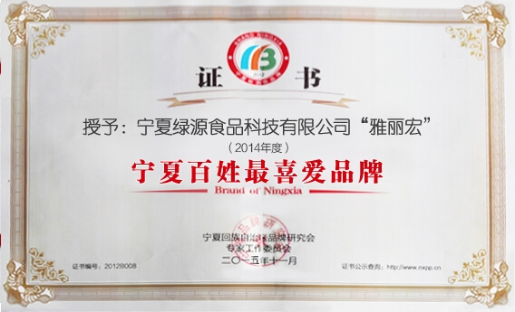

宁夏绿源食品科技有限公司
宁夏绿源食品科技有限公司成立于2005年，注册资金200万元。公司位于宁夏国家级经济技术开发区——银川德胜工业园区，是一家集茶叶、枸杞生产、加工、销售于一体的食品科技公司。公司在不断发展壮大的同时，取得了良好经济效益和社会效益。

绿源公司自1996年正式进入宁夏以来，销售始终坚持抓品牌茶、优质茶为主，以重质量为宗旨，并注册“六盘山”牌商标，公司生产的“六盘山”牌茶系列多次入选为宁夏回族自治区人民政府和银川市人民政府重大国内外活动指定用茶和指定产品。先后获得银川农业产业化龙头企业、宁夏名牌产品、宁夏著名商标、宁夏特色产品、消费者心中最信赖的品牌、食品生产质量管理先进集体等70多项荣誉称号。
法人代表 强世国
宁夏绿源食品科技有限公司 总经理
中国茶叶流通协会 常务理事
银川市茶行业协会 会长
银川市青年企业家协会 副会长
宁夏农村经济技术开发促进会 副会长
公司曾获得以下荣誉：
1998年获得宁夏回族自治区成立四十周年大庆“指定用茶”；
2003年获得第七届全国少数民族传统体育运动会“指定用茶”；
2004年获得“第十三届中国金鸡百花电影节”指定产品；
2004年在“升好祖国第一旗”暨国旗传递活动中，获得唯一“指定用茶”单位；
2005年7月配合银川市商务局成功举办首届中西茶饮艺术节暨浮山有机茶展销节；
2006年1月公司获“创品牌，构和谐”优秀企业，公司总经理强世国被评为优秀企业家；
2006年7月公司生产的“六盘山”牌系列茶选定为自治区第十二届运动会唯一指定用茶单位；
2006年3月被中国质量万里行，塞上质量行评为茶行业“全区质量信誉品牌唯一代表单位”；
2007年1月荣获“最具社会责任感优秀企业”，总经理强世国被评为“最具社会责任感杰出企业家”；
2007年2月联合市商务局、银川市茶行协会成功举办首届“普洱茶展销艺术节”；
2008年5月公司被银川市工商局评为“守合同重信用”企业；
2009年3月公司被银川市委、银川市人民政府评为首届银川市商贸行业“小巨人企业”；
2009年7月公司生产“六盘山”牌茶系列被宁夏回族自治区人民政府推荐为“宁夏十大特色产品”；
2009年8月公司生产“六盘山”牌茶被评为“百姓信得过的清真品牌”；
2009年11月银川市人民政府授予宁夏绿源食品科技有限公司“农业产业化龙头企业”；
2009年12月公司生产的“六盘山”牌枸杞芽尖茶被授予“宁夏名牌产品”；
2010年4月，公司被银川市工商行政管理局评为2008-2009年度“守合同重信用”企业；
2010年4月，公司被银川市质量技术监督局评为“食品生产质量管理先进集体”；
2010年12月，公司“长山头”系列产品被授予“2010年度宁夏特色品牌”；
2011年5月，公司“长山头、六盘山”枸杞、茶系列产品被评为“中国著名品牌”；
2011年8月，公司被自治区工商行政管理局评为“2009-2010年度守合同重信用企业”；
2012年3月，公司被自治区工商行政管理局、自治区消费协会评选为“宁夏安全放心消费品牌企业”。
2015年宁夏第九届著名商标证书“六盘山”商标（注册证号1384637）被延续认定为第九届宁夏著名商标。
2013~2015年宁夏绿源食品科技有限公司“老衲家”宁夏特色品牌。
2013~2015年宁夏绿源食品科技有限公司“强记雅丽红”宁夏特色品牌。
2013~2015年宁夏绿源食品科技有限公司“长山头”宁夏百姓最喜爱品牌。
2013~2015年宁夏绿源食品科技有限公司“强记回乡源”宁夏最具成长力品牌。
2013~2015年宁夏绿源食品科技有限公司“强记回乡源”宁夏标志性品牌。
2013~2015年宁夏绿源食品科技有限公司“雅丽宏”宁夏百姓最喜爱品牌。
2013~2015年宁夏绿源食品科技有限公司“老主任”为宁夏最具成长力品牌。
2013~2015年宁夏绿源食品科技有限公司“强记回乡宝”宁夏百姓最喜爱品牌。